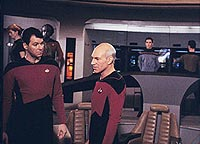
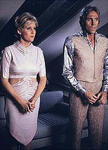
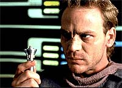
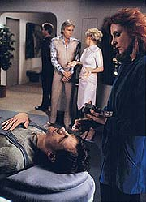
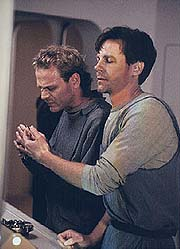

|
MANCHETE
DO EPISDIO
Premissa
interessante se perde pelo
excesso de didatismo e moralismo
Episdio
anterior | Prximo
episdio
Sinopse:
Data Estelar:
desconhecida.
Durante um estudo sobre as mudanas magnticas sofridas pelo sol
do sistema Delos, a Enterprise recebe um pedido de socorro de um
cargueiro danificado. Quatro passageiros so resgatados, junto com
a carga da nave, mas o cargueiro em si no pde ser salvo. Dois
dos convidados so planeta Ornada, tecnologicamente avanado, e os
outros dois, de Brekka. Todos ficam surpresos quando eles comeam a
disputar a carga.
 Os
aliengenas contam a Picard que a preciosa carga na verdade um
medicamento para uma praga que j afeta o povo de Ornada por dois sculos.
A "cura" manufaturada exclusivamente em Brekka, que
fornecida aos Ornarianos em troca de alimentos e outras necessidades
bsicas. Entretanto, no caso especfico, os Brekkianos alegam que
os Ornarianos no pagaram pela carga e se preparam para lev-la de
volta a Brekka.
Apontando que sua civilizao ser destruda sem o medicamento,
os Ornarianos convencem Picard a mediar a disputa. Entretanto, tudo
que o capito da Enterprise consegue convencer os Brekkianos a
doar duas doses para as necessidades imediatas dos Ornarianos a
bordo. Quando a dupla toma o medicamento, a dra. Crusher descobre
que a suposta cura nada mais que um narctico, e que os
Ornarianos sofrem na verdade de sndrome de abstinncia causada
pelo vcio de consumir a droga.
 Os
Brekkianos sabem disso, mas optaram por no revelar aos Ornarianos
que sua "doena" no fatal e por manter aquele povo
dependente da droga.
Picard, citando a Primeira Diretriz, se recusa a informar aos
Ornarianos que os Brekkianos os esto enganando pelos ltimos 200
anos. Em vez disso, ele vira a mesa contra os Brekkianos ao desistir
de efetuar reparos na nica nave cargueira Onariana em operao
no sistema. Deste modo, os Ornarianos sero incapazes de honrar seu
acordo de comrcio e iro, consequentemente, escapar de seu vcio.
Comentrios:
"Symbiosis" parte de uma premissa bastante
interessante. Como o prprio nome j diz, o episdio faz uma
analogia entre as relaes que existem entre organismos biolgicos
dependentes entre si e as duas civilizaes do sistema Delos,
Ornara e Brekka. Infelizmente, durante o processo de execuo da
premissa, a opo acabou sendo por atirar sobre a audincia uma
histria de tom doutrinrio e pouco crtico.
Uma das coisas que mais irrita nos episdios da primeira temporada
de A Nova Gerao a forma pela qual os roteiristas
tratam os telespectadores --como meros idiotas. A necessidade de
afirmar que Jornada nas Estrelas trata de assuntos
importantes e contemporneos parece ter sido entendida como a
obrigao de incluir discursos bvios e moralistas nas falas dos
personagens, s para "esclarecer" aos telespectadores
qual o tema do episdio.
O maior exemplo desse tipo de atitude em toda a srie se faz sentir
aqui, em um dilogo travado entre Wesley Crusher e Tasha Yar na
ponte da Enterprise. Nele, o menino se diz intrigado pela atitude de
um sujeito de querer se drogar conscientemente, mesmo sabendo o mal
que aquilo far ao seu organismo, somente para que Tasha Yar possa
fazer um discurso tpico de propaganda barata de combate s
drogas.
 Essa
cena sintomtica, por dois motivos. Em primeiro lugar, pelo
referencial de produo (a j citada mania de
"explicar" os episdios). Em segundo, e esse ponto at
funciona como uma "desculpa" pelo "erro", pelo
contexto histrico da produo. Em 1988, quando o episdio foi
exibido, os EUA eram governados pelo republicano Ronald Reagan, que
instaurou uma verdadeira guerra contra o narcotrfico.
Nesse contexto de combate s drogas, at natural que uma srie
como Jornada nas Estrelas tome a iniciativa de tentar
esclarecer, de forma contundente, quais so os problemas ligados ao
consumo de drogas. Mesmo assim, correto dizer que, em qualque poca,
este episdio teria ficado melhor se tivesse evitado esse
"didatismo" exagerado.
Se no fosse pelo tom dogmtico e acrtico, "Symbiosis"
teria tudo para ser um estudo tico e profundo da
"simbiose" entre aquelas duas civilizaes. Valores
humanos parte, temos de admitir que aquela sociedade dupla
funcionava de forma harmoniosa. Por mais que achemos errado que um
povo viva s custas de outro graas a um vcio induzido, a
verdade que aquele modelo funcionava.
Caso Picard tivesse revelado o segredo aos Ornarianos, como sugeria
Beverly Crusher, teria trazido uma tremenda catstrofe para aquele
sistema planetrio. Assim que os Ornarianos parassem de consumir o
felcio, a economia de Brekka iria quebrar, levando todos os seus
habitantes a uma crise que causaria a morte de milhes deles.
 Poderamos
at pensar que trata-se de justia potica, uma vez que os
Brekkianos estavam vivendo s custas do vcio Ornariano, mas temos
de pensar bem sobre isso: possivelmente a verdadeira natureza do felcio
fosse desconhecida tambm entre a maior parte do povo de Brekka.
difcil supor que toda uma civilizao conseguiria manter segredo
sobre algo to srio. Se todos os Brekkianos soubessem, os
Ornarianos acabariam sabendo.
Com a soluo adotada --uma leitura correta e precisa da Primeira
Diretriz--, o ciclo de explorao ser eventualmente cortado, mas
haver tempo para que os Brekkianos se preparem para viver sem
depender dos recursos de Ornara. Ser difcil, mas o balano
final para os dois povos acabar sendo melhor que o da soluo
impulsiva sugerida pela mdica da Enterprise.
Alis, por falar nela, Beverly Crusher foi o grande destaque entre
os personagens regulares para esse episdio. Neste episdio temos
a chance de conhecer mais o profundo senso moral e tico e a incrvel
determinao da doutora. Trata-se da nica personagem que recebeu
tratamento especial nesse episdio. O resto apenas seguiu o fluxo
da histria, sem participar dela de modo especial.
 No
fim das contas, mais um enorme potencial desperdiado. Quando os
roteiristas comearem a acertar em cheio, o que ocorrer somente
na segunda temporada, veremos o quo inteligentes tramas de fundo
moral podem ser no contexto de Jornada nas Estrelas. Por
enquanto, a produo est apenas "calibrando" o equilbrio
entre narrativa e contedo. E, tomando "Symbiosis" por
base, ainda h muito o que ajustar.
Citaes:
Riker - "Where
will it take us, mr. La Forge?"
("Onde ir nos levar, sr. La Forge?")
La Forge - "The Opraline system."
("Ao sistema Opraline.")
Riker - "An interesting choice. Why?"
("Uma escolha interessante. Por qu?")
La Forge - "Curiosity, I've never been there."
("Curiosidade, nunca estive l antes.")
Trivia:
 Merritt Butrick, que interpretou o filho de Kirk, David Marcus, nos
filmes Jornada nas Estrelas II e III, participou deste
episdio como o personagem T'Jon. Na ocasio, o ator j
apresentava alguns sintomas da Aids, doena que o mataria no ano
seguinte, em maro de 1989.
Merritt Butrick, que interpretou o filho de Kirk, David Marcus, nos
filmes Jornada nas Estrelas II e III, participou deste
episdio como o personagem T'Jon. Na ocasio, o ator j
apresentava alguns sintomas da Aids, doena que o mataria no ano
seguinte, em maro de 1989.
Como este episdio foi filmado depois de "Skin
of Evil" (mas foi ao ar antes), a verdadeira ltima
cena de Tasha Yar acontece na rea de carga da Enterprise. Ao final
do episdio pode-se ver Tasha fazendo um sinal de adeus enquanto as
portas do corredor se fecham por trs de Picard e Beverly Crusher.
Ficha
tcnica:
Histria de Robert Lewin
Roteiro de Robert Lewin, Richard Manning e Hans
Beimler
Direo de Win Phelps
Exibido em 18/04/1988
Produo: 023
Elenco:
Patrick Stewart como
Jean-Luc Picard
Jonathan Frakes como William Thomas Riker
Brent Spiner como Data
LeVar Burton como Geordi La Forge
Michael Dorn como Worf
Gates McFadden como Beverly Crusher
Marina Sirtis como Deanna Troi
Wil Wheaton como Wesley Crusher
Denise Crosby como Natasha "Tasha" Yar
Elenco convidado:
Judson Scott como
Sobi
Merritt Butrick como T'Jon
Richard Lineback como Romas
Kimberly Farr como Langor
Episdio
anterior | Prximo
episdio
|